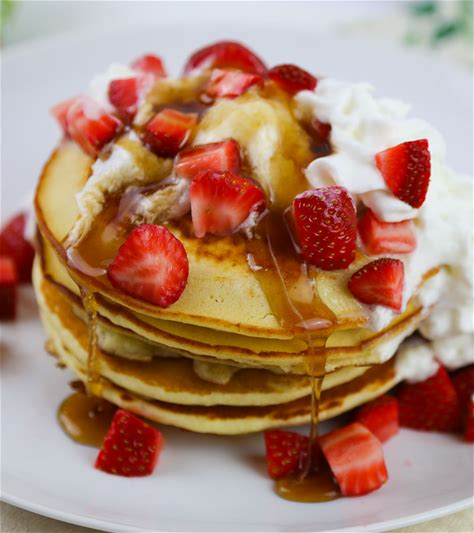

Pancakes

Ingredients
- 1 cup all-purpose flour
- 1 tablespoon sugar
- 1 teaspoon baking powder
- 1/2 teaspoon baking soda
- 1/2 teaspoon salt
- 1 cup buttermilk
- 1 egg
- 2 tablespoons melted butter
Instructions
- In a large bowl, whisk together the flour, sugar, baking powder, baking soda, and salt.
- In another bowl, whisk together the buttermilk, egg, and melted butter.
- Pour the wet ingredients into the dry ingredients and stir until just combined. Do not overmix.
- Heat a non-stick skillet or griddle over medium heat. Pour 1/4 cup of batter onto the skillet for each pancake.
- Cook until bubbles form on the surface of the pancake, then flip and cook until golden brown on the other side.
- Serve with your favorite toppings, such as maple syrup, fresh fruit, or whipped cream.
Smoothie Bowl

Ingredients
- 1 banana
- 1/2 cup frozen berries
- 1/2 cup Greek yogurt
- 1/4 cup milk (or a milk alternative)
- 1 tablespoon honey (optional)
- Granola, sliced fruit, and nuts for toppings
Instructions
- In a blender, bine the banana, frozen berries, Greek yogurt, milk, and honey. Blend until smocomoth.
- Pour the smoothie into a bowl.
- Top with granola, sliced fruit, and nuts as desired.
- Enjoy immediately.